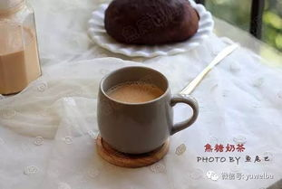
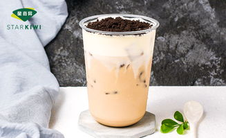
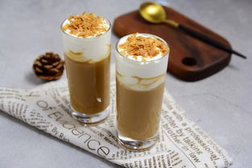
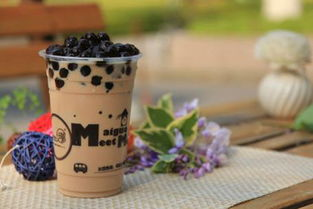

焦糖可可
- 红茶用热开水泡上待用，奶锅坐火上，小火烧热锅子，倒入细砂糖，让其平铺在锅底。
- 小火加热至糖溶化，继续加热同时转到锅子，让其受热均匀，不要用勺子搅拌
- 待锅里的糖变成焦色，开始有焦香味道，倒入牛奶。
- 将事先泡好的红茶水连带茶叶一同倒入锅里，小火继续加热。
- 随着温度的升高，茶叶会慢慢的浮在牛奶的表面，这时关火盖上锅盖焖一会，茶叶的味道会更浓郁。
- 5分钟后，开小火继续加热，待牛奶表面出现泡沫的状态，不要煮沸，关火。
- 过滤掉茶叶，就可以开喝了，冷热均可

奥利奥可可
- 将水煮沸，放入红茶，焖三分钟左右，焖长了会有苦味（水与牛奶等量或略比牛奶少一点）。
- 将奥利奥揉碎 如果怕奶茶太甜需将奥利奥中的夹心刮去。
- 将泡好的红茶放入牛奶中（喜欢茶味的朋友可将茶也放入牛奶中）开小火煮至有小泡，加入糖或蜂蜜。
- 加入奥利奥 搅拌均匀

焦糖玛奇朵
- 蒸煮牛奶：使用咖啡机蒸煮牛奶至65摄氏度左右；
- 使用意式浓缩咖啡机制作双份浓缩咖啡；
- 杯中加入香草糖浆，将牛奶倒入杯中，最上面加入一勺奶泡。
- 将浓缩咖啡倒入杯中
- 最上层淋上焦糖沙司，可根据自己喜好绘制图案

珍珠巧克力
- 茶叶放入杯中，开水冲泡。
- 可可粉和奶粉放入碗中，用泡好的茶水冲开，搅拌均匀让其充分融化。
- 煮好的西米从冰箱拿出来，加入西米和淡奶油搅拌均匀。